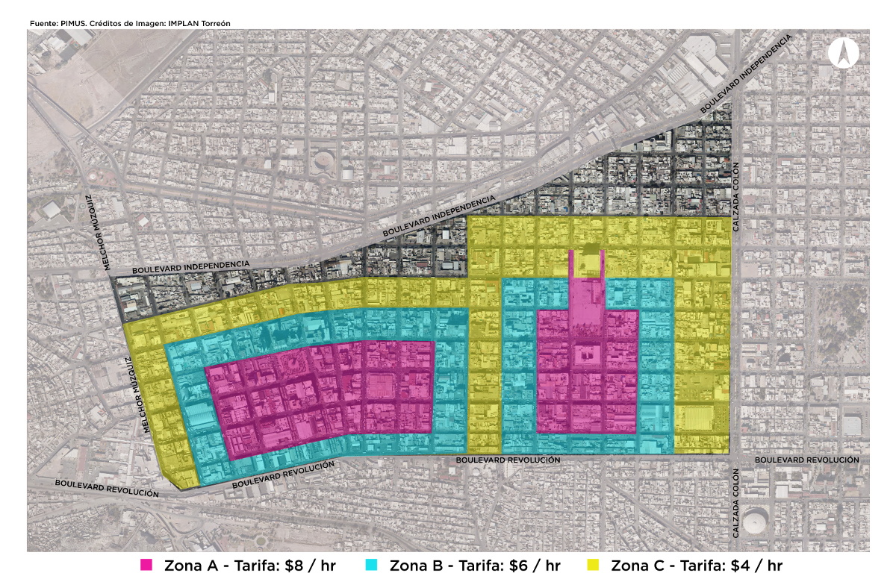
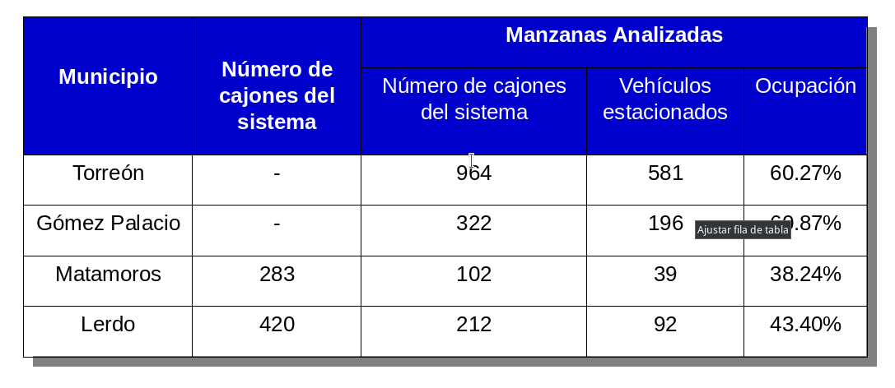
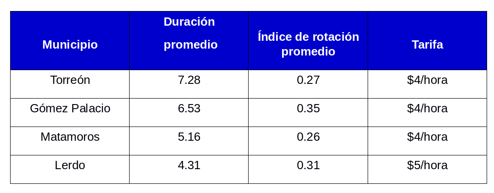

Los problemas que el tráfico vehicular genera en las ciudades mexicanas, son ya conocidos: gran inversión de tiempo tras efectuar un recorrido, aumento de la contaminación atmosférica y acústica, empobrecimiento del paisaje urbano, así como un deterioro paulatino de la calidad de vida, dificultando el desarrollo y sostenibilidad de la ciudad.
Actualmente en México, no existen políticas públicas que restrinjan o desincentiven el uso del vehículo privado; la construcción y el aumento de la infraestructura vial no aportan a la solución, por el contrario, agravan la problemática tras generar más oferta para la circulación de vehículos. Se deben buscar otras alternativas para promover el uso de transporte no motorizado y/o público.
Una solución radica en la gestión de demanda de los viajes en vehículos privados, donde el Instituto de Políticas para el Transporte y Desarrollo (ITDP) señala algunas estrategias principales: * Establecimiento de tarificación vial, es decir, un cobro automatizado para acceder a ciertas zonas urbanas concéntricas. * Reducción paulatina del par vial, reemplazando carriles por ciclovías, andadores peatonales, o vías exclusivas para transporte público o automóviles de uso compartido. * Políticas de estacionamiento, donde existe una táctica para el uso eficiente del espacio, por medio de un mecanismo de cobro: el parquímetro. Una zona de parquímetros, de acuerdo con este instituto, implica una baja inversión en tecnología simple y probada, que adicionalmente puede generar un ingreso económico para el mejoramiento de la zona en donde se implementa la estrategia.
La ausencia de parquímetros propicia una baja disponibilidad de estacionamientos, otorgando pocos lugares libres, ya que, tras ser gratuito, los automóviles se quedan varados por largos periodos de tiempo; provocando un aumento en la congestión vial, puesto que existen pocos lugares, y se baja la velocidad en búsqueda de uno.
Ocasiona entorpecimiento de movilidad, estacionarse en lugares no aptos, como banquetas y doble fila; un incremento en los niveles de contaminación, emisiones de gases y toques de claxon; así como una apropiación indebida del espacio público, dando lugar a franeleros que apartan posibles lugares de estacionamiento. Por esto se recomienda la implementación de parquímetros al menos en las zonas más caóticas y céntricas de una ciudad.
Si bien una zona de parquímetros implica un cobro por el uso de espacio público, su objetivo no debe ser sólo la obtención de un recurso económico. Es una consecuencia derivada, pero también lo es la optimización de los cajones, el fomento de la rotación de vehículos, así como la intensificación del uso del transporte público en zonas céntricas.
SITUACIÓN EN LA LAGUNA
Actualmente en Torreón, la zona de parquímetros en el centro de la ciudad, es una realidad; sin embargo, según el Plan Integral de Movilidad Urbana Sustentable de la Laguna (PIMUS), existe una sobreoferta de cajones, además, su nivel de ocupación es del 60%, cuando lo ideal sería que fuera del 85% en la hora máxima de demanda, lo que da paso a una reevaluación de su gestión y regulación.
Sin embargo, no es la única ciudad de la Zona Metropolitana de la Laguna (ZML) con este problema.
La tabla muestra un análisis comparativo de la rotación y duración promedio (desde las 8 am hasta las 4 pm) de automóviles en los centros urbanos de la ZML. Con base en este análisis, se deduce que Lerdo es el municipio que tiene una gestión de estacionamiento más efectiva, y no es ninguna coincidencia que éste sea el que cuente con la tarifa más alta.
El PIMUS sugiere dos soluciones para Torreón; la primera, una reorganización de los cajones en batería, para cambiarlos a cordón y así combatir la sobreoferta, y segundo, un seccionamiento de tres zonas con tres tarifas diferentes para regular la eficiencia del espacio así como su rotación vehicular, en donde las manzanas con mayor ocupación también son las manzanas con tarifa más alta.

Es importante recalcar que estas tarifas deberán ser actualizadas según la tasa de inflación anual del país. Datos del Banco de México indican que la tasa ha oscilado entre un 3 y 5% durante los últimos años, suponiendo que el patrón se mantenga, se podría estimar un aumento de un peso por zona cada dos años.
Es claro que la implementación y mejora de sistemas de cobro no va a resolver todos los problemas de movilidad, pero sí los reduce y hace una diferencia. No basta con la revisión de estos sistemas, es necesario que existan obras o acciones complementarias que mejoren el uso del espacio público; arreglo de rampas y banquetas, relocalización de mobiliario, biciestacionamientos, señalética, paraderos, etc..
Ocupación vehicular de parquímetros en La Laguna.

Fuente: PIMUS
Duración e índice promedio de rotación de cajones de estacionamiento en La Laguna

Fuente: PIMUS
Referencias: Instituto de Políticas para el Transporte y Desarrollo (ITDP). Plan Integral de Movilidad Urbana Sustentable de la Laguna (PIMUS).